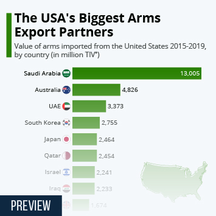

According to data from the Stockholm International Peace Research Institute (SIPRI), the biggest importer of arms from the United States from 2015 to 2019 was Saudi Arabia. This infographic uses SIPRI's "trend-indicator values" (TIV). These are based on the known unit production costs of weapons and represent the transfer of military resources rather than the financial value of the transfer.
Defense
The USA's Biggest Arms Export Partners

Description
This chart shows the countries importing the highest value in arms from the U.S. from 2015 to 2019.